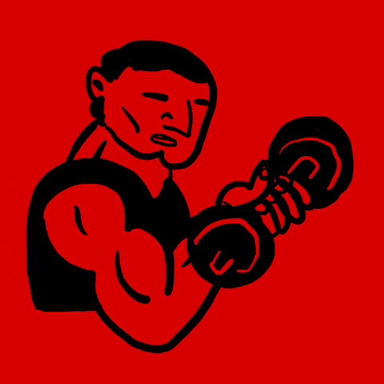
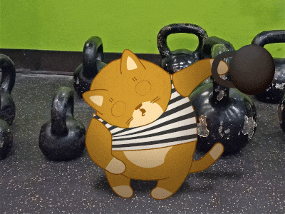

Main types of Workouts
-
Also known as aerobic exercise, helps develop stamina. It can also improve the functioning of the heart and lungs. Another benefit of endurance exercise is an increase in the body's metabolic rate, which helps a person burn calories long after their workout is complete and assist in a person's body-reshaping efforts. Endurance exercise not only boosts a person's physical health -- it might also increase mental functioning. When a person performs an endurance exercise, their brain releases endorphins. Endorphins are the body's natural pain reliever and feel-good hormone. According to the study "Effects of Exercise," conducted by Dinas, Flouris and Koutedakis, those who participated in endurance exercise experienced a lower instance of developing symptoms of depression thanks to experienced elevated levels of endorphin released during and after activity.
Endurance in sports: Endurance training is essential for a variety of endurance sports. A notable example is distance running events.Two other popular examples are cycling and competitive swimming. Athletes can also undergo endurance training when their sport may not necessarily be an endurance sport in the whole sense but may still demand some endurance.
Physiological effects: Fundamental for endurance training is supercompensation. Supercompensation describes the adaptation of muscles on a previous stimulus over time.Long-term endurance training induces many physiological adaptations both centrally and peripherally mediated. Central cardiovascular adaptations include decreased heart rate, increased stroke volume of the heart
Types of Endurance
-
Basic Endurance
Intensity:Around your aerobic threshold (heart rate around 60-70% of your maximum – you can talk easily with your mate).
Length: workout 30-… min, interval N/A (constant pace, no intervals)
Rest between intervals: – (constant pace, no rest)
Benefits: Basic endurance is the main type of endurance training and is characterized by low intensity, high volume exercises. Training at this intensity trains your cardiac output and heart muscle, strengthens your immune system, and reduces cholesterol level and blood pressure. As most of the energy produced at this intensity comes from your body fat, it also improves the economy of your metabolism. -
Tempo Endurance
Intensity: just below the anaerobic threshold (heart rate around 75-85% of your maximum – talking is possible only sentence by sentence). Length: interval 10-30 min (total length of work intervals does usually not exceed 45-60 min) Rest between intervals: no general rule, but continue at easy tempo during rest Benefits: This type of endurance training is meant for improving your workload or speed at anaerobic threshold. The energy for this workout comes mainly from carbohydrates (sugar), but body fats play also a substantial part.
-
Maximal Endurance
Intensity: around your VO2max intensity (heart rate around 90-95% of your maximum – talking is possible only word by word). During the intervals lactate accumulates pretty fast that makes your muscles stiff. Length: interval 3-5 min (total length of the work intervals should not exeed 15-20 minutes) Rest between intervals: 3-6 min Benefits: Maximal endurance can also be characterized as maximal aerobic power. It is the best way for the development of maximal oxygen consumption (VO2max). Most of the energy comes from carbohydrates (sugar) and only a tiny part from your body fat.
-
Basic Endurance
-
Strength training, also known as resistance training, causes contractions of the muscles via external resistance. The resistance can come from using barbells, dumbbells, resistance bands, strength machines or a person's own body weight. Strength training forms tiny, microscopic tears in a person's muscles. As the tears heal the muscles repair themselves with new muscle tissue. By developing new muscle tissue, an individual can improve their aesthetic appearance and transform their physique to make it leaner and more toned. Strength training or resistance training involves the performance of physical exercises which are designed to improve strength and endurance. It is often associated with the use of weights. It can also incorporate a variety of training techniques such as calisthenics, isometrics, and plyometrics.
Increased physical attractiveness: Many people take up strength training to improve their physical attractiveness. There is evidence that a body type consisting of broad shoulders and a narrow waist, attainable through strength training, is the most physically attractive male attribute according to women participating in the research.
Increased general physical health: Strength training also provides functional benefits. Stronger muscles improve posture, provide better support for joints, and reduce the risk of injury from everyday activities. Older people who take up weight training can prevent some of the loss of muscle tissue that normally accompanies aging—and even regain some functional strength—and by doing so become less frail.
-
Dumbbell Training
By definition, a dumbbell is a short bar with a weight at either end. Sometimes they come wrapped in different materials or even feature adjustable dials, but the core concept has been the same for centuries. Speaking of which, the forebearers of these nifty hand weights date as far back as ancient Greece. You can find dumbbells that weigh as little as 1 pound and as much as 375 pounds. That said, most dumbbells fall within the range of 5-25 pounds. At the nearest gym, the heaviest dumbbell usually weighs in at around 60 pounds. If you’re looking for anything heavier, you should be going to one of those special gyms because you’re a beast.As classic free weights, dumbbells are typically used for joint-isolation exercises.
 -
Kettlebell Training
Kettlebells are cast iron weights ranging from 5 lbs to over 100 lbs, shaped like a ball with a handle for easy gripping. The kettlebell originated in Russia and was popular in the U.S. decades ago, but has hit a resurgence in the last few years with a flurry of classes, videos, and books. The reason? Kettlebells offer a different kind of training using dynamic moves targeting almost every aspect of fitness—endurance, strength, balance, agility and cardio endurance. People love it because it's challenging, efficient and you only need one piece of equipment. The idea is to hold the kettlebell in one or both hands and go through a variety of exercises like the two arm swing, the snatch, the loaded carry, and the high pull.
 -
Barbell Training
A barbell is a piece of exercise equipment used in weight training, bodybuilding, weightlifting and powerlifting, consisting of a long bar, usually with weights attached at each end. Image result for barbell exercise description Keep the barbell close to your body and pull it straight up toward your chest, bending your elbows as you do, so that they go just past your torso. Squeeze your shoulder blades at the top of the movement. Slowly straighten your arms to lower the bar, keeping it off the floor. This is 1 rep. Booker suggests women generally start with a set of two 5- to 10-pound weights, and men start with a set of two 10- to 20-pound weights. How to: Stand with a weight in each hand, near hips, palms forward. Shoulders and elbows should be pinned against the wall.

-
Dumbbell Training